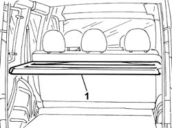
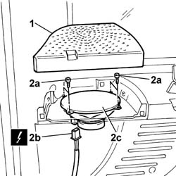

5570T98 rear speaker - r r
- Path
- Procedures > 55 ELECTRICAL EQUIPMENT > 5570 ACCESSORIES > 5570T car radio and car telephone > 5570T98 rear speaker - r r
- Kind
- repair procedure (removal / refitting; the operation number is the code)
- Applies to
- all engines; all production periods
- Interactive page
- https://sloeber94.github.io/elrnDB-fDbl/en/#/2584967
Applies to: all engines; all production periods
 Removing
Removing
 Refitting
RefittingDisconnect the battery negative terminal.
1. Fold down the moving part of the parcel shelf.

Applies to: all engines; all production periods
1. Remove the plastic protection.
2. Undo the screws (2a), disconnect the electrical connector (2b) and remove the loudspeaker (2c).
 | Name | Connector |
|---|---|---|
2b | Rear left loudspeaker (in parcel shelf) |
| Name | Connector |
|---|---|---|
2b | Right rear speaker (in parcel shelf) |

Applies to: all engines; all production periods
Refitting
RemovingConnect the electrical connector and fit the loudspeaker in its seating, securing it with its screws.
| Name | Connector |
|---|---|---|
2b | Rear left loudspeaker (in parcel shelf) |
| Name | Connector |
|---|---|---|
2b | Right rear speaker (in parcel shelf) |
Fit the plastic protection.
Refit the moving part of the parcel shelf.
Connect the battery negative terminal.